地政学
ラサはチベット高原の象徴であり、中国国家の辺境統治を可視化する自治区首府です。寺院、行政庁舎、軍事的な警備、鉄道と道路が近接し、宗教的中心性と国家の管理が日々の街路で交差しています。緊張も残る街です。

🇨🇳 中国チベット自治区 / アジア / World City Atlas
標高三六〇〇メートルを超える谷に、ポタラ宮、大昭寺、巡礼路、自治区行政、観光経済、新市街、鉄道と高原の暮らしが重なるチベットの聖都。
都市の骨格
ラサはチベット仏教の巡礼都市であり、自治区の行政中心でもあります。古い巡礼路、新しい道路、鉄道、空港、郊外開発が、信仰と統治の緊張を同じ谷に集めます。
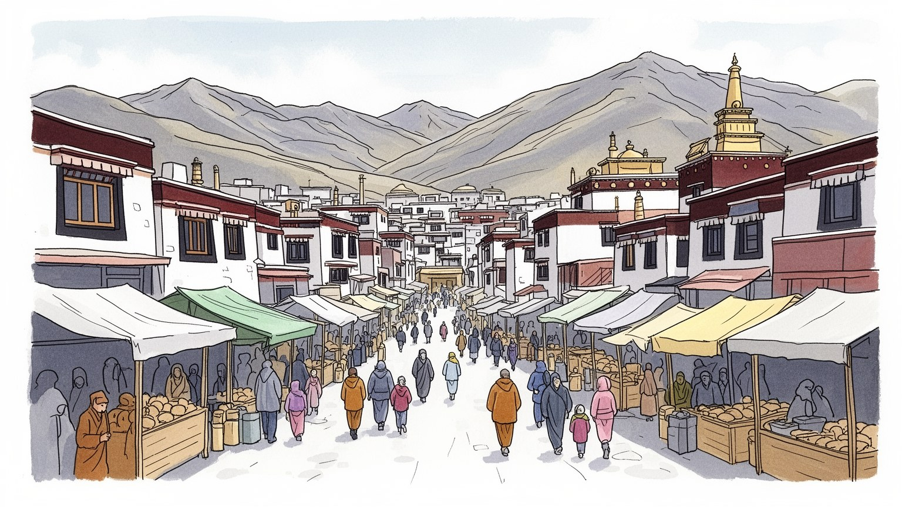
ラサはチベット高原の象徴であり、中国国家の辺境統治を可視化する自治区首府です。寺院、行政庁舎、軍事的な警備、鉄道と道路が近接し、宗教的中心性と国家の管理が日々の街路で交差しています。緊張も残る街です。
行政、観光、宿泊、飲食、交通、建設、小売、手工芸が雇用を支えます。巡礼者と観光客の流れは収入を生む一方、季節変動、家賃上昇、若者の就職、移住者との競争を通じて都市の働き方を変えます。格差と希望も映します。
大昭寺を巡るコルラ、僧院の読経、護符、バター灯、チベット語の看板や歌は、信仰を日常の時間へ戻します。観光化と管理が強まっても、祈りは家族、商い、食、服装の中に息づきます。世代の記憶も保つ営みです。
ポタラ宮や八廓街は世界的な名所ですが、住民には高地の寒暖差、医療、教育、住宅、公共交通、観光混雑が日常の重荷です。巡礼者、商人、公務員、旅行者が同じ狭い旧市街を使います。生活の調整も続く高原都市です。
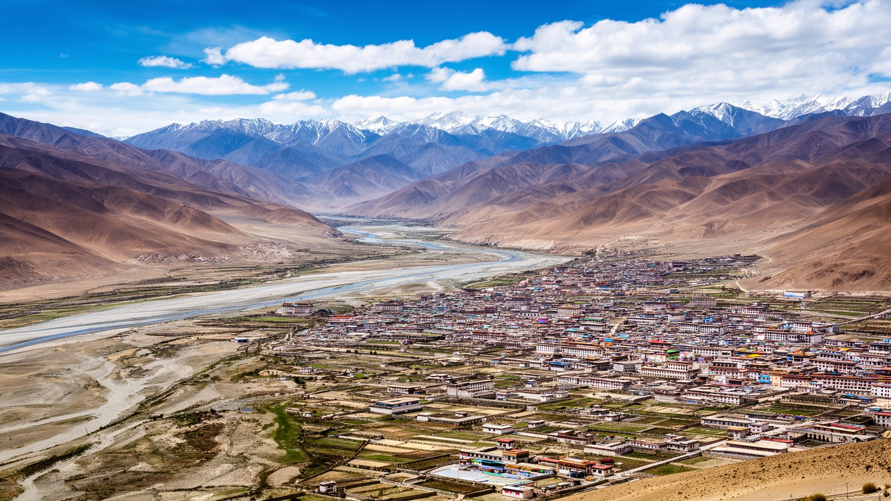
ラサは標高三六〇〇メートルを超えるチベット高原の谷にあり、都市の形は平地の広さよりも山、川、日差し、酸素の薄さによって決まります。キチュ川沿いの限られた土地に旧市街、行政施設、住宅地、道路、郊外開発が並び、少し外へ出ると乾いた斜面と寺院の丘が視界を支配します。高地の強い紫外線、昼夜の寒暖差、短い雨季、冬の乾燥は、服装、建材、移動時間、観光客の体調、屋外労働の負担を左右します。ラサは中国西部の辺境統治を示す首府でもあり、鉄道、道路、空港、行政機関は国家の接続力を可視化します。川沿いの道路や新しい橋は移動を便利にした一方、谷の限られた空間では住宅地、商業地、行政用地、観光動線が近く、開発は景観と信仰空間へすぐ影響します。高原の地形を読むことは、自然条件、宗教的な眺め、統治、観光、健康が同じ都市計画の上で結びつくことを読む作業です。山に囲まれた視界は聖地らしい印象を作る一方、都市の拡大先を限り、交通集中と大気汚染を起こしやすいです。水資源、排水、冬の暖房、太陽光利用も高原都市の重要な条件です。さらに植生は薄く、土埃や乾いた風は道路整備と清掃にも影響します。都市が広がるほど、川辺の湿地、農地、斜面の景観をどこまで残すかが問われます。地形は背景ではなく、祈り、移動、統治、暮らしを毎日制約する骨格です。
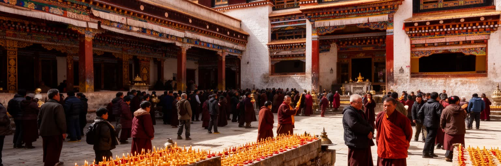
ラサの文化を支える中心にはチベット仏教があります。僧院の読経、バター灯、護符、マニ車、法要、家の中の仏壇、巡礼者の足取りは、宗教を特別な行事ではなく日々の生活時間へ戻します。大昭寺やポタラ宮のような名所だけでなく、茶館で交わされる挨拶、店先の供物、家族の祈願、葬送の作法、チベット語の歌や地名にも信仰は残ります。宗教は観光資源である前に、家族の健康、商売の安全、死者の記憶、季節の暦を支える仕組みです。ショトン祭などの祝祭、チベット歌謡や踊り、夜の小さな食堂も、信仰と娯楽の距離を近づけ、歌声も路地に残します。僧侶の活動、寺院の管理、教育、言語、集会のあり方は、住民の自己理解に深く関わります。ラサを読むには、荘厳な建築だけでなく、祈りを支える日常の労働にも目を向けます。灯明を整える人、花や香を売る人、境内を清掃する人、巡礼者を迎える店があって、聖地の時間は保たれます。信仰が都市の芯であるほど、それを静かに守る余地が都市の成熟を示します。祈りの場には階層、性別、民族、地方から来た巡礼者と観光客の距離も現れます。宗教都市の豊かさは信仰の多さだけでなく、それを支える日々の仕事と敬意の作法にあります。写真を撮る都市よりも、立ち止まり方を学ぶ都市です。朝夕の灯明や読経が、観光地以上の時間を保ちます。
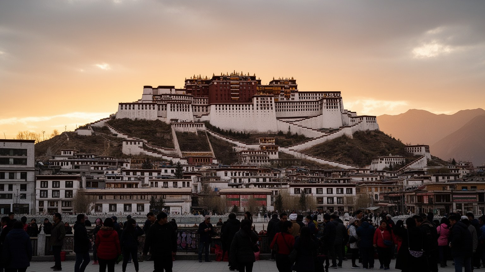
ポタラ宮はラサの景観を一瞬で決定する建築であり、チベット仏教、歴史的権威、世界遺産観光、政治的記憶が重なる場所です。丘の上に白と紅の巨大な量塊が立つ姿は、遠くからでも都市の中心を示し、巡礼者や旅行者は自然にその方向を意識します。かつての宗教政治の中心としての意味は、今日の博物館的管理や観光動線だけでは説明できません。内部の礼拝空間、歴代ダライ・ラマの記憶、壁画、仏像、階段のきつさは、信仰と権威が身体的な経験として積み上がることを伝えます。同時に、ポタラ宮は強い管理の下にある象徴でもあり、入場制限、警備、撮影規則、周辺広場の設計は、信仰の場が国家的な観光資源として扱われる現実を示します。住民にとって宮殿は都市の記憶、喪失、誇り、日常の方角を束ねる存在です。周辺の道路や広場が整備されるほど建築は見やすくなる一方、古い街路との関係は薄れます。壮麗さだけでなく、誰が祈り、誰が管理し、誰が収入を得るのかまで読む必要があります。夜にライトアップされた姿や広場の儀礼的な軸線は、都市の象徴をさらに強調します。しかしその見やすさは、建物を生きた宗教空間から記念写真の対象へ変える力も持ちます。距離を置いて眺める視線と、敬意を持って近づく身体の差を意識したい場所です。遺産の価値は保存状態だけでなく、都市の記憶をどう受け渡すかにもあります。
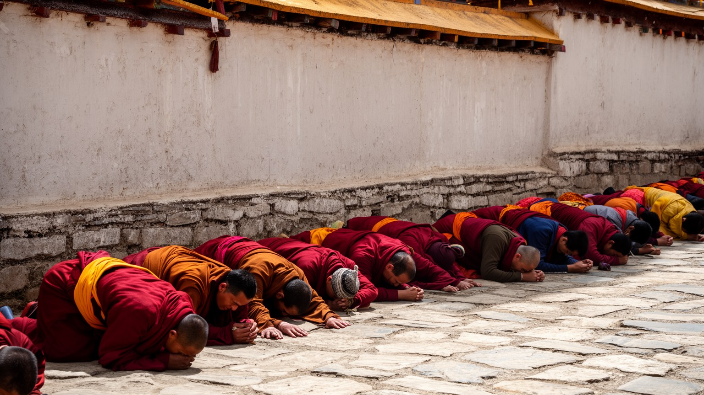
大昭寺と八廓街は、ラサの宗教生活をもっとも濃く感じさせる都市空間です。大昭寺へ向かう参拝者は、五体投地を繰り返し、マニ車を回し、線香とバター灯の匂いの中で寺の周囲を歩きます。八廓街のコルラは単なる観光ルートではなく、身体を使って聖なる中心を回り続ける実践であり、老人、僧侶、農村から来た巡礼者、子ども連れの家族、旅行者が同じ円環に入ります。通り沿いには仏具、衣料、茶館、土産物、食堂、宿、携帯決済の小店が並び、祈りと商いは互いを支えます。観光客にとっては色彩豊かな旧市街に見える場所でも、住民には朝の礼拝、買い物、仕事、警備、行政管理が重なる日常の道です。近年の整備は歩きやすさや防災を改善した一方、店舗構成や家賃、監視の増加を通じて生活の細部を変えています。巡礼路では歩く速度も重要で、急ぐ観光客と祈りに集中する人の間には見えない差があります。道を譲り、撮影を控える作法も都市を読む入口になります。回るという行為は、都市の中心を何度も確認し、個人の願いを共同の時間へ入れる方法です。長距離を旅してきた人の疲れ、寄進の意味、チベット語の会話、商店の暮らしに注意を払うと、八廓街は単なる市場ではなく、祈りが街路の秩序を作る場所だと分かります。円環の道を乱さないことは、聖地と生活の両方を尊重する態度です。
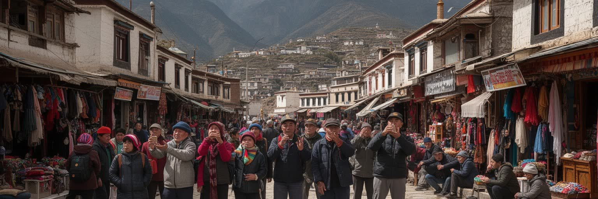
ラサの観光経済は、ポタラ宮、大昭寺、八廓街、周辺僧院、高原景観を中心に成り立ちます。宿泊、飲食、ガイド、運転手、土産物、写真、衣料、茶館、航空券、ツアー会社は、多くの住民に現金収入をもたらし、農牧地域から来る人にも働く機会を提供します。観光はチベット文化への関心を広げる一方、信仰の場を消費対象に変えやすい力も持ちます。巡礼者の祈りが写真の被写体になり、仏具や民族衣装が記念品として扱われ、旧市街の店舗が観光客向けに入れ替わると、生活と信仰の厚みは見えにくくなります。季節変動も大きく、観光期には宿泊費や交通が混み、閑散期には収入が落ちます。高地に慣れない訪問者への医療対応、多言語案内、廃棄物処理、文化的作法の説明は、観光都市としての信頼を左右します。観光収入が地元の小店や職人へ届く場合もあれば、外部資本のホテルや大型ツアーに吸収される場合もあります。聖地を守る経済でなければ、観光は都市の核心を傷つけます。さらに、観光の表側を支えるのは早朝の清掃、食材の仕入れ、車両の整備、ガイドの説明、宿の洗濯、土産物づくり、夜の小さな屋台です。華やかな名所の背後にある反復労働を見れば、ラサの観光は文化の展示ではなく、働く人の生活条件そのものだと分かります。利益の分配と季節外の雇用が都市の安定を決めます。
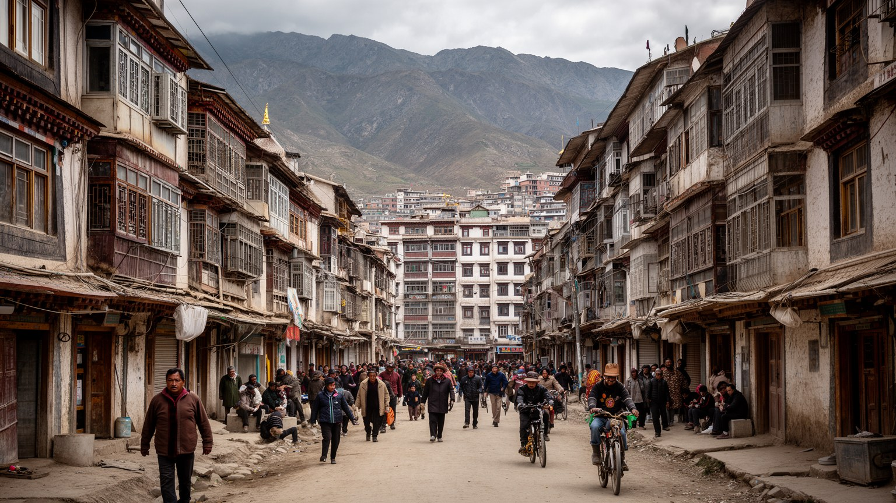
ラサの日常は、観光名所の外側にある茶館、学校、病院、市場、住宅地、バス停、寺院前の広場で見えてきます。朝には巡礼へ向かう人、店を開ける人、学校へ行く子ども、行政機関へ出勤する人が動き、昼には甘い茶や麺、ツァンパ、肉料理を囲む時間が街に緩みを作ります。新しい集合住宅や道路は生活を便利にする一方、旧市街の隣人関係や小さな商いを変え、家賃の上昇は若い世帯や低所得層に重くのしかかります。農牧地域から移ってきた人、他地域から来た移住者、公務員、僧侶、学生、観光業の働き手は、同じ都市に住みながら異なる時間割で暮らします。医療や教育の中心性はラサの魅力ですが、地方から来る患者や家族には宿泊費と移動の負担があります。住民にとって大切なのは、壮麗な景観だけでなく、安心して歩ける道、手頃な食堂、母語で相談できる窓口、子どもが学べる学校、年老いた家族が休める医療です。大学や職業学校、放課後の運動場、広場のダンスや散歩も都市を支えます。旧市街の保存が外観だけに偏れば、そこに住む人の生活費や修繕費は置き去りになります。逆に新市街の整備だけを進めれば、祈りの道や近所の記憶は薄れます。住まいは文化保存、福祉、交通、雇用をつなぐ暮らしの基盤です。生活の安定は、信仰の継続を支える土台でもあります。住宅政策の質が、都市の包容力を決めます。
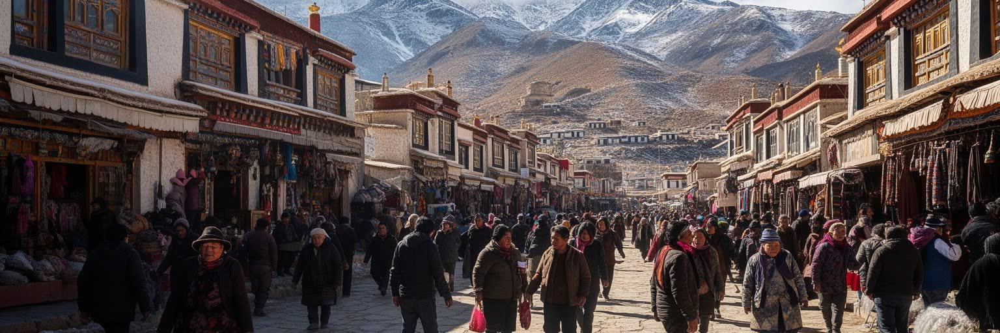
ラサの気候は都市の見た目以上に生活を左右します。標高が高いため空気は薄く、到着したばかりの旅行者は歩く速度、睡眠、食事、頭痛に注意しなければなりません。住民も強い紫外線、乾燥、昼夜の寒暖差、冬の冷え込み、短い雨季の水の動きに合わせて暮らします。日差しは洗濯物を早く乾かし、太陽光利用の可能性を広げますが、屋外労働者や巡礼者には身体的な負担にもなります。乾いた風と土埃は道路清掃、建物の維持、呼吸器の健康に関わり、都市が拡大するほど舗装、緑地、水辺の管理が重要になります。高原では暖房、断熱、給水、排水、廃棄物処理が平地の都市より複雑になり、環境への負荷も見えやすくなります。観光客が美しい青空として受け取る景観は、住民にとっては肌を守り、水を確保し、冬を越す具体的な生活条件です。気候変動は氷河、水資源、草地、農牧地域にも影響し、ラサの市場や家計へ間接的に響きます。高原都市の成熟は、景観を眺めるだけでなく、薄い空気の中で誰が働き、誰が休めるかを考えることから始まります。とくに高齢者、子ども、持病を持つ人、屋外で働く人にとって、高度と寒暖差は毎日のリスクです。病院へのアクセス、休憩できる店、日陰、暖房、飲み水、分かりやすい観光案内は、都市のやさしさを測る具体的な基準になります。気候への適応は、環境政策であると同時に福祉政策でもあります。
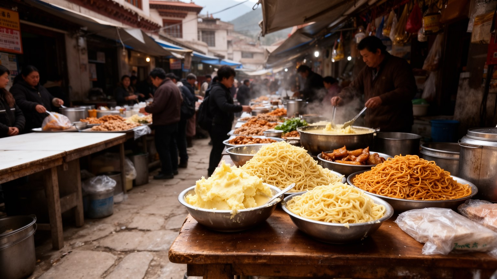
ラサの食は、高原の農牧文化、チベット仏教の生活、交易、観光の需要が重なってできています。ツァンパ、バター茶、甘いミルクティー、麺、ヤク肉、干し肉、乳製品、青稞酒、蒸しパン、野菜料理は、家庭、茶館、巡礼者の食堂、旅行者向けの店でそれぞれ違う意味を持ちます。茶館は食事の場所であると同時に、会話、休憩、情報交換、仕事の相談が行われる小さな公共空間です。市場では供物、香、布、仏具、日用品、野菜、肉、土産物が近い距離に並び、祈りと台所が分かちがたく結びつきます。八廓街の店、ショッピングセンター、露店、動画や口コミの情報網は、買い物の場所と値段の感覚を変えます。鉄道や道路が物資の流れを変えたことで、外部からの商品や食材は増えましたが、地元の小商いは価格競争と家賃上昇にも直面します。観光客が食べる一皿の背後には、農牧民、運転手、卸売商、調理人、給仕、皿洗いの仕事があります。高地の食は、身体を温め、移動の疲れを癒やし、祈りの合間に人をつなぐ役割を持ちます。ラサを味わうことは、名物を消費するだけでなく、都市と高原の農牧地域、巡礼、観光経済の依存関係を知る入口です。地方から届く乳製品や肉、外部から入る野菜や加工品が同じ売り場に並ぶため、食卓は広域物流の変化を映します。祭礼の日の食事や茶館の長い会話、湯気と香の匂いは、都市の記憶をつなぐ時間でもあります。
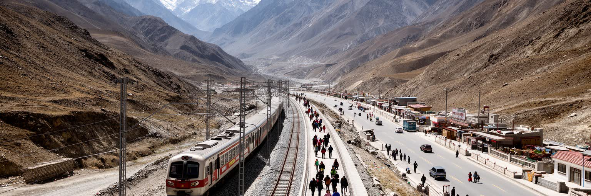
ラサの近年の変化を大きく動かしたのは、道路、青蔵鉄道、空港を通じた広域接続です。かつて高原の長い移動は時間と体力を必要としましたが、鉄道と航空路は観光客、公務員、商人、学生、建設資材、食料、燃料を大量に運び、都市の生活速度を変えました。鉄道駅や空港へ向かう道路は、旧市街から離れた新しい都市軸を作り、ホテル、物流、住宅、行政施設の配置にも影響します。接続が強まるほど、ラサは孤立した聖地ではなく、中国内陸部や世界の観光市場と結ばれた都市になります。これは医療や教育、物資供給を改善する一方、観光の急増、価格上昇、文化の均質化、外部資本の流入を招きます。高原鉄道そのものも、凍土、酸素、環境保全をめぐる技術と政治の象徴であり、便利さだけでは測れない乗り物です。市内ではバス、タクシー、徒歩、観光車両が旧市街の狭い空間を分け合い、渋滞や歩行者安全が重くなります。交通を読むことは、ラサがどの方向へ開かれ、どの速度で外部の力を受け入れているのかを見ることです。巡礼者にとって移動が容易になることは聖地への到達を広げますが、旅の時間が短くなることで、かつての困難や地域間のつながりの感覚も変わります。物流が安定すれば物価や医療は改善する一方、外から届く商品が地元の小商いを押しのけることもあります。駅前の人の声、車の音、乾いた風が接続の速さを肌で伝えます。
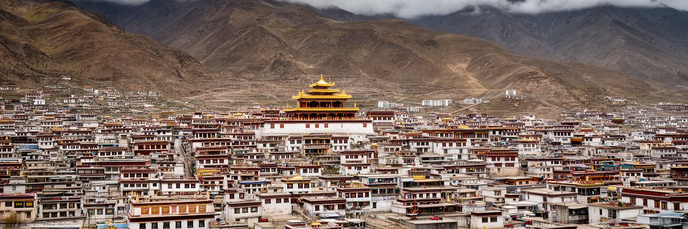
ラサを理解するには、聖地、首府、観光都市、高原の生活圏という複数の顔を切り離さずに読む必要があります。ポタラ宮の壮麗さ、大昭寺を回る祈り、八廓街の商い、青蔵鉄道の接続、行政施設の存在、茶館の日常、チベット語の響き、観光客の視線は、同じ谷の中で互いに影響しています。経済規模だけで見れば、ラサは巨大金融都市とは違います。しかし宗教的な意味、地政学的な重さ、文化保存の難しさ、高原環境への適応を考えると、世界の都市を理解する上で欠かせない場所です。外から見るラサは神秘化されやすく、時には政治的な象徴として単純化されます。けれど住民にとって都市は、祈り、仕事、教育、医療、家賃、交通、家族の将来を毎日調整する生活の場です。ニュース、短い動画、口コミ、寺院や学校の連絡は、人々が街を知る情報網にもなります。観光の成功は、名所を見せる力だけでなく、信仰を尊重し、言語を守り、旧市街に住む人を追い出さず、高原の環境を壊しすぎないことにかかります。ラサの道を歩くと、聖なる円環と国家の直線的な道路が重なり、古い祈りと新しい開発が同じ風にさらされています。その緊張を読むことが、この都市を読む核心です。人口や経済規模だけでは、祈り、言語、記憶、環境が都市の価値を作る事実は見えません。ラサを地図に置くことは、文化的尊厳と生活の持続性を同じ重さで見ることを求めます。